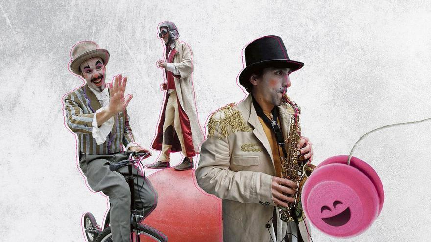

FETEN 2026

Magia en Escena: Feria Europea de Artes Escénicas
FETEN es el principal punto de encuentro de los profesionales del sector de las artes escénicas para niños, niñas y familias en España. Gijón se convierte durante una semana en un gran escenario donde se presentan las propuestas más innovadoras de teatro, danza, títeres y circo.
Con más de tres décadas de trayectoria, la feria no solo es un mercado para programadores, sino una fiesta cultural que inunda las calles y teatros de la ciudad con historias que despiertan la imaginación y la sensibilidad de los más pequeños.